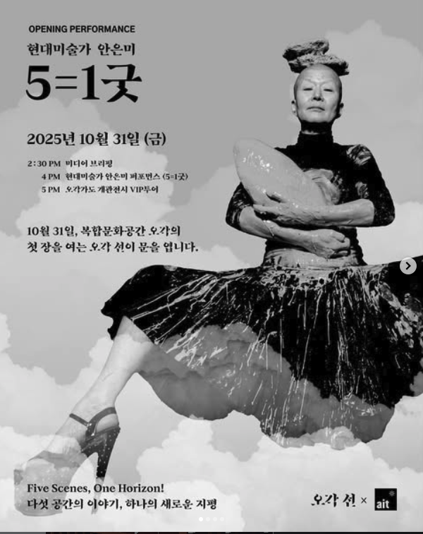

하나의 오각 · 다섯 공간
독립적이면서
하나로 이어지는
다섯 개의 공간
서로 다른 예술과 감각이 교차하는 경험을 통해, 사람들이 익숙한 세상을 새롭게 바라보게 한다. 오각 Vision
다섯 공간
선 · 향 · 서 · 담 · 원
01 / 05
자동 전환 중 · 5초
선, 5개 공간 중 1번째, 자동 전환 중


시안에서는 선을 예시로 먼저 펼쳤습니다. 실제로 먼저 펼쳐지는 공간은 프로그램 상태에 따라 정해집니다. 공간색은 상태색이 아니라 공간 정체성 보조색이며 승인 전 후보입니다.
현재·예정
공개되면
먼저 보이는 것
참여에 필요한 사실을 추상적인 소개보다 앞에 둡니다. 확인 전에는 어떤 값도 추정하지 않습니다.
- 일정
- 확인 전 추정하지 않음
- 장소
- 검증 후 공개
- 대상
- 프로그램별 조건 확인 후 공개
- 가격
- 확인 전 추정하지 않음
- 예약 상태
- 예약 준비 중
- 연결 공간
- 선 · 향 · 서 · 담 · 원 중 검증된 한 곳
유효하고 승인된 외부 예약 참조가 확인될 때만 별도의 예약 행동이 나타납니다.안전한 빈 상태
- 주소
- 운영 정보 확인 후 공개
- 운영시간
- 운영 정보 확인 후 공개
- 교통·주차
- 운영 정보 확인 후 공개
- 관람 조건
- 프로그램별 확인 후 공개
오각 프로그램 아카이브
공간에서 열린 기록
선에서 열린 행사
3개의 기록

향에서 열린 행사
2개의 기록

건물 외관색 기반 아트 배너
투과
오각의 다섯 공간
각기 다른 감각과 활동이 한 건물 안에서 이어집니다.